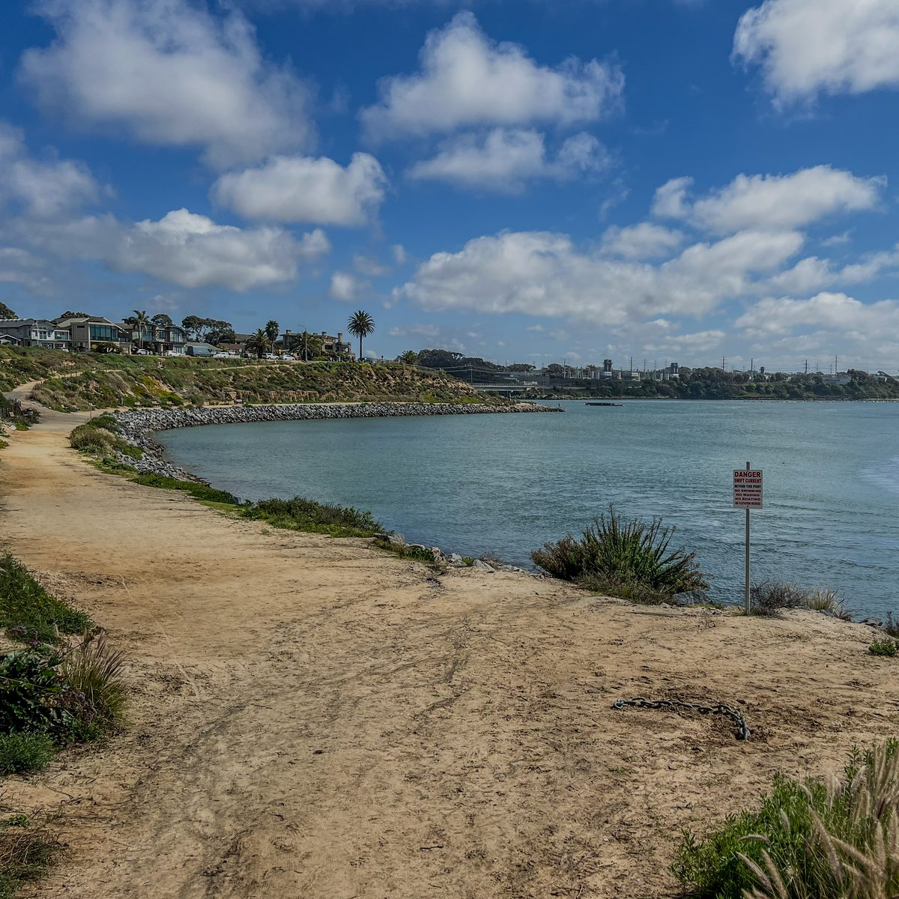
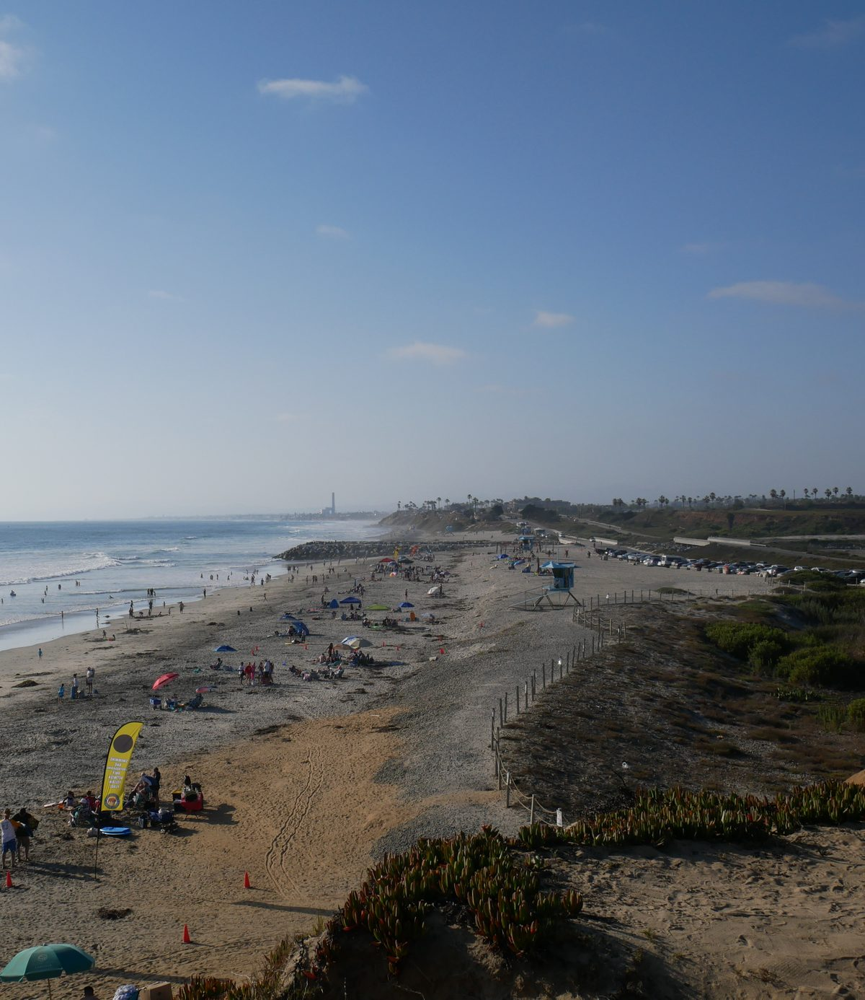
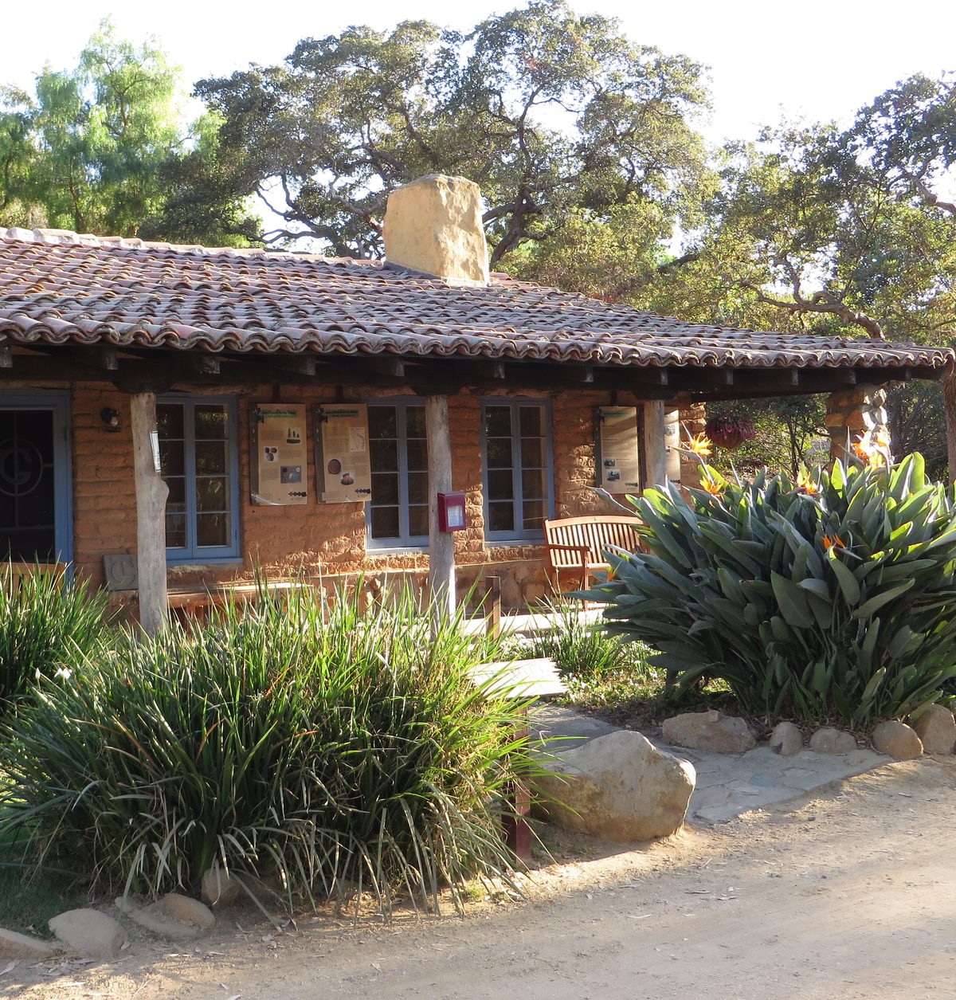
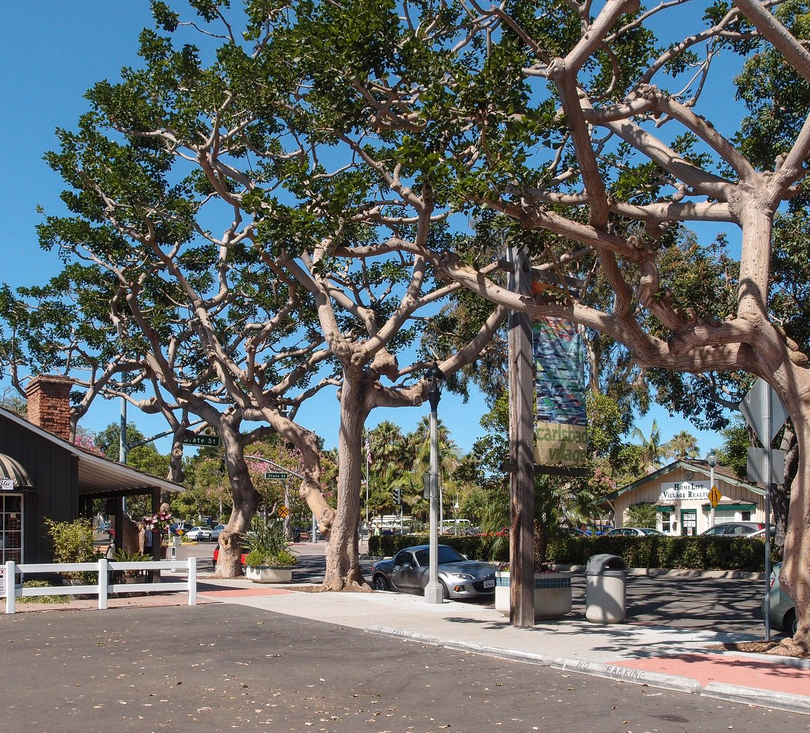

01

Carlsbad, San Diego County
Homes along seven miles of coast and in the hills behind it, with saved searches and the things Jim checks before you write an offer.
Carlsbad at a glance
Carlsbad sits on the coast of northern San Diego County, about 35 miles north of San Diego. It became a city on July 16, 1952, and counted 114,746 people at the 2020 Census.
The town began in the 1880s beside the rail line between San Diego and Los Angeles, and took its name from the spa city of Karlsbad in Bohemia. Three lagoons break up its coastline. Carlsbad is one of the six cities on Jim's North County San Diego page.
Saved searches
Each card opens a live search of MLS listings, updated as they change.

01

02

03

04
<!-- IDX_ZONE: homes-for-sale-carlsbad-ca-feed -->
The newest Carlsbad listings in one compact row, six to eight homes. Builder places the Showcase hotsheet shortcode here in its compact layout.

The rail line between San Diego and Los Angeles was built through here in the 1880s. In the middle of that decade John A. Frazier's well struck mineral water, and the town was named after Karlsbad, the spa city in Bohemia, to promote it. The City lists Frazier's Well and the 1887 Santa Fe Depot among its local landmarks.
Carlsbad's first City Hall now stands in Magee Park as Heritage Hall, a block from the ocean. The Village and Barrio Master Plan governs what is built in the Village and in the Barrio beside it, one of the city's oldest neighborhoods.
Carlsbad's three lagoons cover more than 1,000 acres. Buena Vista Lagoon, on the Oceanside line, is a freshwater ecological reserve owned by the state. Agua Hedionda is three connected lagoons split by Interstate 5 and the railroad bridge, and boats are allowed on its 295-acre inner lagoon with a City permit.
Batiquitos Lagoon, 561 acres owned by the state, had been closed off by sediment until an enhancement project in the mid-1990s opened it to the ocean again. A 2.7-mile trail runs along its north shore. The City posts the rules for each on its lagoon pages.
The City counts seven miles of coastline, with beaches running about six and a half miles between Batiquitos and Buena Vista lagoons. Carlsbad State Beach lies at the foot of the coastal bluffs from Pine Avenue to Cannon Road, and South Carlsbad State Beach keeps a campground on the bluff.
About 37 percent of the city lies in the Coastal Zone drawn by the California Coastal Act. Inside it, most building projects need a coastal development permit, and depending on the address the City or the California Coastal Commission issues it.
In 1986 the City Council adopted a growth management ordinance, and that November voters passed Proposition E, which capped the number of homes. The Growth Management Program splits the city into four quadrants and sets standards new development must meet, from park acreage to fire response times. In 2021 the City found that state housing law overrides the caps, and it is working on a new approach.
Inland neighborhoods such as Aviara, La Costa, Calavera Hills, Bressi Ranch and Robertson Ranch were built under master plans the City still keeps on file. The City also runs Leo Carrillo Ranch Historic Park, 27 acres of the ranch the actor Leo Carrillo bought in 1937.

Day to day
School information is factual and by district. Always confirm a specific address in the district's school finder.
Questions
No. About 37 percent of the city lies in the Coastal Zone set by the California Coastal Act. The City's online lookup shows whether an address is inside it.
Four districts serve parts of the city, by address: Carlsbad Unified, Encinitas Union, San Dieguito Union High and San Marcos Unified. Carlsbad Unified's address lookup is the place to start.
Three districts: the Carlsbad Municipal Water District, the Olivenhain Municipal Water District and the Vallecitos Water District. The City's water district map shows which one serves an address.
By road from the Village, downtown San Diego is about 35 miles away, San Diego International about 33 miles and John Wayne Airport in Orange County about 51 miles. McClellan-Palomar Airport is inside the city.
Nearby


Resources
Contact
Send Jim the addresses you are watching, and he will look up the Coastal Zone and the tax bill for each one before you book a showing.